Mechanical science - Hydrostatics
Hydrostatics
21.1 Pressure
The pressure acting on a surface is defined as the perpendicular force per unit area of surface. The unit of pressure is the Pascal, Pa, where 1 Pascal is equal to 1 Newton per square metre. Thus pressure,
where $F$ is the force in Newton's acting at right angles to a surface of area $A$ square metres. When a force of 20 N acts uniformly over, and perpendicular to, an area of $4\mathrm{~m}^{2}$, then the pressure on the area, $p$, is given by $$ p=\frac{20\mathrm{~N}}{4\mathrm{~m}^{2}}=5\mathrm{~Pa} $$
Problem 1. A table loaded with books has a force of 250 N acting in each of its legs. If the contact area between each leg and the floor is $50\mathrm{~mm}^{2}$, find the pressure each leg exerts on the floor.
From above, pressure $\quad p=\frac{\text {force}}{\text {area}}$ Hence, $$ \begin{aligned} p &=\frac{250\mathrm{~N}}{50\mathrm{~mm}^{2}}=\frac{250\mathrm{~N}}{50 \times 10^{-6}\mathrm{~m}^{2}} \\ &=5 \times 10^{6}\mathrm{~N}/ \mathrm{m}^{2}=\mathbf{5}\mathbf{~ MPa}\end{aligned} $$ That is, the pressure exerted by each leg on the floor is 5 MPa .
Problem 2. Calculate the force exerted by the atmosphere on a pool of water that is 30 m long by 10 m wide, when the atmospheric pressure is 100 kPa .
From above, pressure $=\frac{\text {force}}{\text {area}}$, hence, force $=$ pressure $\times$ area. The area of the pool is $30\mathrm{~m} \times 10\mathrm{~m}$, i.e. $300\mathrm{~m}^{2}$. Thus, force on pool, $F=100\mathrm{~kPa} \times 300\mathrm{~m}^{2}$ and since $1\mathrm{~Pa}=1\mathrm{~N}/ \mathrm{m}^{2}$, $$ \begin{aligned} F &=(100 \times 10^{3})\frac{\mathrm{~N}}{\mathrm{~m}^{2}} \times 300\mathrm{~m}^{2}=3 \times 10^{7}\mathrm{~N} \\ &=30 \times 10^{6}\mathrm{~N}=30\mathrm{~MN}\end{aligned} $$ That is, the force on the pool of water is $\mathbf{30}\mathbf{~ MN}$.
Problem 3. A circular piston exerts a pressure of 80 kPa on a fluid, when the force applied to the piston is 0.2 kN . Find the diameter of the piston.
From above, pressure $=\frac{\text {force}}{\text {area}}$ hence, $\quad$ area $=\frac{\text {force}}{\text {pressure}}$ Force in Newton's $=0.2\mathrm{~kN}=0.2 \times 10^{3}\mathrm{~N}=200\mathrm{~N}$, and pressure in Pascal's is $80\mathrm{~kPa}=80000\mathrm{~Pa}$ $=80000\mathrm{~N}/ \mathrm{m}^{2}$. Hence, $$ \text {area}=\frac{200\mathrm{~N}}{80000\mathrm{~N}/ \mathrm{m}^{2}}=0.0025\mathrm{~m}^{2} $$ Since the piston is circular, its area is given by $\pi d^{2}/4$, where $d$ is the diameter of the piston. Hence, $$ \text {area}=\frac{\pi d^{2}}{4}=0.0025 $$ from which, $\quad d^{2}=0.0025 \times \frac{4}{\pi}=0.003183$ i.e. $$ \begin{aligned} d &=\sqrt{0.003183} \\ &=0.0564\mathrm{~m}, \text {i.e.}\mathbf{56.4}\mathbf{~ mm}\end{aligned} $$ Hence, the diameter of the piston is $\mathbf{56.4}\mathbf{~ mm}$.
Now try the following exercise
Exercise 106 Further problems on pressure
- A force of 280 N is applied to a piston of a hydraulic system of cross-sectional area $0.010\mathrm{~m}^{2}$. Determine the pressure produced by the piston in the hydraulic fluid. [28 kPa]
- Find the force on the piston of question 1 to produce a pressure of 450 kPa . [ 4.5 kN ]
- If the area of the piston in question 1 is halved and the force applied is 280 N, determine the new pressure in the hydraulic fluid. [56 kPa]
21.2 Fluid pressure
A fluid is either a liquid or a gas and there are four basic factors governing the pressure within fluids.
(a) The pressure at a given depth in a fluid is equal in all directions, see Figure 21.1(a).
(b) The pressure at a given depth in a fluid is independent of the shape of the container in which the fluid is held. In Figure 21.1(b), the pressure at $X$ is the same as the pressure at $Y$.
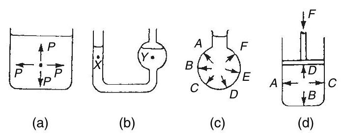Figure 21.1
(c) Pressure acts at right angles to the surface containing the fluid. In Figure 21.1(c), the pressures at points $A$ to $F$ all act at right angles to the container.
(d) When a pressure is applied to a fluid, this pressure is transmitted equally in all directions. In Figure 21.1(d), if the mass of the fluid is neglected, the pressures at points $A$ to $D$ are all the same.
The pressure, $p$, at any point in a fluid depends on three factors:
(a) the density of the fluid, $\rho$, in $\mathrm{kg}/ \mathrm{m}^{3}$,
(b) the gravitational acceleration, $g$, taken as approximately $9.8\mathrm{~m}/ \mathrm{s}^{2}$ (or the gravitational field force in N/kg), and
(c) the height of fluid vertically above the point, $h$ metres.
The relationship connecting these quantities is:
When the container shown in Figure 21.2 is filled with water of density $1000\mathrm{~kg}/ \mathrm{m}^{3}$, the pressure due to the water at a depth of 0.03 m below the surface is given by:
Figure 21.2
Problem 4. A tank contains water to a depth of 600 mm . Calculate the water pressure (a) at a depth of 350 mm , and (b) at the base of the tank. Take the density of water as $1000\mathrm{~kg}/ \mathrm{m}^{3}$ and the gravitational acceleration as $9.8\mathrm{~m}/ \mathrm{s}^{2}$.
From above, pressure $p$ at any point in a fluid is given by $p=\rho gh$ pascals, where $\rho$ is the density in $\mathrm{kg}/ \mathrm{m}^{3}$, $g$ is the gravitational acceleration in $\mathrm{m}/ \mathrm{s}^{2}$ and $h$ is the height of fluid vertically above the point.
(a) At a depth of 350 mm , i.e. 0.35 m , $$ p=1000 \times 9.8 \times 0.35=\mathbf{3430}\mathbf{~ Pa}=\mathbf{3.43}\mathbf{~ kPa} $$
(b) At the base of the tank, the vertical height of the water is 600 mm , i.e. 0.6 m . Hence, $$ p=1000 \times 9.8 \times 0.6=\mathbf{5880}\mathbf{~ Pa}=\mathbf{5.88}\mathbf{~ kPa} $$
Problem 5. A storage tank contains petrol to a height of 4.7 m . If the pressure at the base of the tank is 32.3 kPa , determine the density of the petrol. Take the gravitational field force as $9.8\mathrm{~m}/ \mathrm{s}^{2}$.
From above, pressure $p=\rho gh$ Pascal's, where $\rho$ is the density in $\mathrm{kg}/ \mathrm{m}^{3}$, $g$ is the gravitational acceleration in $\mathrm{m}/ \mathrm{s}^{2}$ and $h$ is the vertical height of the petrol. Transposing gives: $\quad \rho=\frac{p}{gh}$ The pressure $p$ is $32.2\mathrm{~kPa}=32200\mathrm{~Pa}$, hence, $$ \text {density}, \rho=\frac{32200}{9.8 \times 4.7}=699\mathrm{~kg}/ \mathrm{m}^{3} $$ That is, the density of the petrol is $699\mathrm{~kg}/ \mathrm{m}^{3}$.
Problem 6. A vertical tube is partly filled with mercury of density $13600\mathrm{~kg}/ \mathrm{m}^{3}$. Find the height, in millimetres, of the column of mercury, when the pressure at the base of the tube is 101 kPa . Take the gravitational field force as $9.8\mathrm{~m}/ \mathrm{s}^{2}$.
From above, pressure $p=\rho gh$, hence vertical height $h$ is given by: Pressure $p=101\mathrm{~kPa}=101000\mathrm{~Pa}$, thus $$ h=\frac{101000}{13600 \times 9.8}=0.758\mathrm{~m} $$ That is, the height of the column of mercury is 758 mm .
Now try the following exercise
Exercise 107 Further problems on fluid pressure
Take the gravitational acceleration as $9.8\mathrm{~m}/ \mathrm{s}^{2}$
- Determine the pressure acting at the base of a dam, when the surface of the water is 35 m above base level. Take the density of water as $1000\mathrm{~kg}/ \mathrm{m}^{3}$. [343 kPa]
- An uncorked bottle is full of sea water of density $1030\mathrm{~kg}/ \mathrm{m}^{3}$. Calculate, correct to 3 significant figures, the pressures on the side wall of the bottle at depths of (a) 30 mm , and (b) 70 mm below the top of the bottle. [(a) 303 Pa (b) 707 Pa ]
- A U-tube manometer is used to determine the pressure at a depth of 500 mm below the free surface of a fluid. If the pressure at this depth is 6.86 kPa , calculate the density of the liquid used in the manometer. [$1400\mathrm{~kg}/ \mathrm{m}^{3}$]
21.3 Atmospheric pressure
The air above the Earth's surface is a fluid, having a density, $\rho$, which varies from approximately $1.225\mathrm{~kg}/ \mathrm{m}^{3}$ at sea level to zero in outer space. Since $p=\rho gh$, where height $h$ is several thousands of metres, the air exerts a pressure on all points on the earth's surface. This pressure, called atmospheric pressure, has a value of approximately 100 kilopascals. Two terms are commonly used when measuring pressures:
(a) absolute pressure, meaning the pressure above that of an absolute vacuum (i.e. zero pressure), and
(b) gauge pressure, meaning the pressure above that normally present due to the atmosphere.
Thus, absolute pressure $=$ atmospheric pressure $+$ gauge pressure Thus, a gauge pressure of 50 kPa is equivalent to an absolute pressure of $(100+50)\mathrm{~kPa}$, i.e. 150 kPa , since the atmospheric pressure is approximately 100 kPa .
Problem 7. Calculate the absolute pressure at a point on a submarine, at a depth of 30 m below the surface of the sea, when the atmospheric pressure is 101 kPa . Take the density of sea water as $1030\mathrm{~kg}/ \mathrm{m}^{3}$ and the gravitational acceleration as $9.8\mathrm{~m}/ \mathrm{s}^{2}$.
From Section 21.2, the pressure due to the sea, that is, the gauge pressure ($p_{g}$) is given by: $p_{g}=\rho gh$ Pascal's, i.e. $p_{g}=1030 \times 9.8 \times 30=302820\mathrm{~Pa}=302.82\mathrm{~kPa}$ From above, absolute pressure $$ \begin{aligned} &=\text {atmospheric pressure}+ \text {gauge pressure} \\ &=(101+302.82)\mathrm{~kPa}=403.82\mathrm{~kPa}\end{aligned} $$ That is, the absolute pressure at a depth of 30 m is 403.82 kPa .
Now try the following exercise
Exercise 108 Further problems on atmospheric pressure
Take the gravitational acceleration as $9.8\mathrm{~m}/ \mathrm{s}^{2}$, the density of water as $1000\mathrm{~kg}/ \mathrm{m}^{3}$, and the density of mercury as $13600\mathrm{~kg}/ \mathrm{m}^{3}$.
- The height of a column of mercury in a barometer is 750 mm . Determine the atmospheric pressure, correct to 3 significant figures. [ 100 kPa ]
- A U-tube manometer containing mercury gives a height reading of 250 mm of mercury when connected to a gas cylinder. If the barometer reading at the same time is 756 mm of mercury, calculate the absolute pressure of the gas in the cylinder, correct to 3 significant figures. [134 kPa]
- A water manometer connected to a condenser shows that the pressure in the condenser is 350 mm below atmospheric pressure. If the barometer is reading 760 mm of mercury, determine the absolute pressure in the condenser, correct to 3 significant figures. [97.9 kPa]
- A Bourdon pressure gauge shows a pressure of 1.151 MPa . If the absolute pressure is 1.25 MPa , find the atmospheric pressure in millimetres of mercury. [743 mm]
21.4 Archimedes' principle
Archimedes' principle states that: If a solid body floats, or is submerged, in a liquid, the liquid exerts an upthrust on the body equal to the gravitational force on the liquid displaced by the body.
In other words, if a solid body is immersed in a liquid, the apparent loss of weight is equal to the weight of liquid displaced.
If $V$ is the volume of the body below the surface of the liquid, then the apparent loss of weight $W$ is given by: $$ W=V\omega=V\rho g $$ where $\omega$ is the specific weight (i.e. weight per unit volume) and $\rho$ is the density.
If a body floats on the surface of a liquid all of its weight appears to have been lost. The weight of liquid displaced is equal to the weight of the floating body.
Problem 8. A body weighs 2.760 N in air and 1.925 N when completely immersed in water of density $1000\mathrm{~kg}/ \mathrm{m}^{3}$. Calculate (a) the volume of the body, (b) the density of the body and (c) the relative density of the body. Take the gravitational acceleration as $9.81\mathrm{~m}/ \mathrm{s}^{2}$.
(a) The apparent loss of weight is 2.760 N $1.925\mathrm{~N}=0.835\mathrm{~N}$. This is the weight of water displaced, i.e. $V\rho g$, where $V$ is the volume of the body and $\rho$ is the density of water, i.e. $$ \begin{aligned} 0.835\mathrm{~N} &=V \times 1000\mathrm{~kg}/ \mathrm{m}^{3} \times 9.81\mathrm{~m}/ \mathrm{s}^{2} \\ &=V \times 9.81\mathrm{~kN}/ \mathrm{m}^{3}\end{aligned} $$ Hence, $\quad \mathbf{V}=\frac{0.835}{9.81 \times 10^{3}}\mathrm{~m}^{3}$ $$ \begin{aligned} &=8.512 \times 10^{-5}\mathrm{~m}^{3} \\ &=\mathbf{8.512}\mathbf{\times}\mathbf{10}^{\mathbf{4}}\mathbf{~mm}^{\mathbf{3}}\end{aligned} $$
(b) The density of the body $$ \begin{aligned} &=\frac{\text {mass}}{\text {volume}}=\frac{\text {weight}}{g \times V} \\ &=\frac{2.760\mathrm{~N}}{9.81\mathrm{~m}/ \mathrm{s}^{2} \times 8.512 \times 10^{-5}\mathrm{~m}^{3}} \\ &=\frac{\frac{2.760}{9.81}\mathrm{~kg} \times 10^{5}}{8.512\mathrm{~m}^{3}}=\mathbf{3305}\mathbf{~ kg}/ \mathbf{m}^{\mathbf{3}} \\ &=\mathbf{3.305}\mathbf{~tonne}/ \mathbf{m}^{\mathbf{3}}\end{aligned} $$
(c) Relative density $=\frac{\text {density}}{\text {density of water}}$ Hence, the relative density of the body $$ =\frac{3305\mathrm{~kg}/ \mathrm{m}^{3}}{1000\mathrm{~kg}/ \mathrm{m}^{3}}=\mathbf{3.305} $$
Problem 9. A rectangular watertight box is 560 mm long, 420 mm wide and 210 mm deep. It weighs 223 N . (a) If it floats with its sides and ends vertical in water of density $1030\mathrm{~kg}/ \mathrm{m}^{3}$, what depth of the box will be submerged? (b) If the box is held completely submerged in water of density $1030\mathrm{~kg}/ \mathrm{m}^{3}$, by a vertical chain attached to the underside of the box, what is the force in the chain?
(a) The apparent weight of a floating body is zero. That is, the weight of the body is equal to the weight of liquid displaced. This is given by: $V\rho g$ where $V$ is the volume of liquid displaced, and $\rho$ is the density of the liquid. Here, $$ \begin{aligned} 223\mathrm{~N} &=V \times 1030\mathrm{~kg}/ \mathrm{m}^{3} \times 9.81\mathrm{~m}/ \mathrm{s}^{2} \\ &=V \times 10.104\mathrm{~kN}/ \mathrm{m}^{3}\end{aligned} $$ Hence, $$ V=\frac{223\mathrm{~N}}{10.104\mathrm{~kN}/ \mathrm{m}^{3}}=22.07 \times 10^{-3}\mathrm{~m}^{3} $$ This volume is also given by Lbd, where $L=$ length of box, $b=$ breadth of box, and $d=$ depth of box submerged, i.e. $$ 22.07 \times 10^{-3}\mathrm{~m}^{3}=0.56\mathrm{~m} \times 0.42\mathrm{~m} \times d $$ Hence, depth submerged, $\mathbf{d}=\frac{22.07 \times 10^{-3}}{0.56 \times 0.42}=0.09384\mathrm{~m}=\mathbf{93.84}\mathbf{~ mm}$
(b) The volume of water displaced is the total volume of the box. The upthrust or buoyancy of the water, i.e. the 'apparent loss of weight', is greater than the weight of the box. The force in the chain accounts for the difference. Volume of water displaced, $$ \begin{aligned} V &=0.56\mathrm{~m} \times 0.42\mathrm{~m} \times 0.21\mathrm{~m} \\ &=4.9392 \times 10^{-2}\mathrm{~m}^{3}\end{aligned} $$ Weight of water displaced $$ \begin{aligned} =V\rho g &=4.9392 \times 10^{-2}\mathrm{~m}^{3} \times 1030\mathrm{~kg}/ \mathrm{m}^{3} \\ & \times 9.81\mathrm{~m}/ \mathrm{s}^{2} \\ &=499.1\mathrm{~N}\end{aligned} $$ The force in the chain $$ \begin{aligned} &=\text {weight of water displaced}- \text {weight of box} \\ &=499.1\mathrm{~N}-223\mathrm{~N}=\mathbf{276.1}\mathbf{~ N}\end{aligned} $$
Now try the following exercise
Exercise 109 Further problems on Archimedes' principle
Take the gravitational acceleration as $9.8\mathrm{~m}/ \mathrm{s}^{2}$, the density of water as $1000\mathrm{~kg}/ \mathrm{m}^{3}$ and the density of mercury as $13600\mathrm{~kg}/ \mathrm{m}^{3}$.
- A body of volume $0.124\mathrm{~m}^{3}$ is completely immersed in water of density $1000\mathrm{~kg}/ \mathrm{m}^{3}$. What is the apparent loss of weight of the body? [1.215 kN]
- A body of weight 27.4 N and volume $1240\mathrm{~cm}^{3}$ is completely immersed in water of specific weight $9.81\mathrm{~kN}/ \mathrm{m}^{3}$. What is its apparent weight? [15.24 N]
- A body weighs 512.6 N in air and 256.8 N when completely immersed in oil of density $810\mathrm{~kg}/ \mathrm{m}^{3}$. What is the volume of the body? [$32.22\mathrm{~dm}^{3}=0.03222\mathrm{~m}^{3}$]
- A body weighs 243 N in air and 125 N when completely immersed in water. What will it weigh when completely immersed in oil of relative density 0.8 ? [148.6 N]
- A watertight rectangular box, 1.2 m long and 0.75 m wide, floats with its sides and ends vertical in water of density $1000\mathrm{~kg}/ \mathrm{m}^{3}$. If the depth of the box in the water is 280 mm , what is its weight? [ 2.47 kN ]
- A body weighs 18 N in air and 13.7 N when completely immersed in water of density $1000\mathrm{~kg}/ \mathrm{m}^{3}$. What is the density and relative density of the body? [4.186 tonne $/ \mathrm{m}^{3}$, 4.186]
- A watertight rectangular box is 660 mm long and 320 mm wide. Its weight is 336 N. If it floats with its sides and ends vertical in water of density $1020\mathrm{~kg}/ \mathrm{m}^{3}$, what will be its depth in the water? [159 mm]
- A watertight drum has a volume of $0.165\mathrm{~m}^{3}$ and a weight of 115 N . It is completely submerged in water of density $1030\mathrm{~kg}/ \mathrm{m}^{3}$, held in position by a single vertical chain attached to the underside of the drum. What is the force in the chain? [1.551 kN]
21.5 Measurement of pressure
As stated earlier, pressure is the force exerted by a fluid per unit area. A fluid (i.e. liquid, vapour or gas) has a negligible resistance to a shear force, so that the force it exerts always acts at right angles to its containing surface.
The SI unit of pressure is the Pascal, Pa , which is unit force per unit area, i.e. $\mathbf{1}\mathbf{~Pa}=\mathbf{1}\mathbf{~N}/ \mathbf{m}^{\mathbf{2}}$. The Pascal is a very small unit and a commonly used larger unit is the bar, where $$ 1\mathrm{~bar}=10^{5}\mathrm{~Pa} $$ Atmospheric pressure is due to the mass of the air above the Earth's surface. Atmospheric pressure changes continuously. A standard value of atmospheric pressure, called 'standard atmospheric pressure', is often used, having a value of 101325 Pa or 1.01325 bars or 1013.25 millibars. This latter unit, the millibar, is usually used in the measurement of meteorological pressures. (Note that when atmospheric pressure varies from 101325 Pa it is no longer standard.)
Pressure indicating instruments are made in a wide variety of forms because of their many different applications. Apart from the obvious criteria such as pressure range, accuracy and response, many measurements also require special attention to material, sealing and temperature effects. The fluid whose pressure is being measured may be corrosive or may be at high temperatures. Pressure indicating devices used in science and industry include:
(i) barometers (see Section 21.6),
(ii) manometers (see Section 21.8),
(iii) Bourdon pressure gauge (see Section 21.9), and
(iv) McLeod and Pirani gauges (see Section 21.10).
21.6 Barometers
Introduction
A barometer is an instrument for measuring atmospheric pressure. It is affected by seasonal changes of temperature. Barometers are therefore also used for the measurement of altitude and also as one of the aids in weather forecasting. The value of atmospheric pressure will thus vary with climatic conditions, although not usually by more than about $10 \%$ of standard atmospheric pressure.
Construction and principle of operation
A simple barometer consists of a glass tube, just less than 1 m in length, sealed at one end, filled with mercury and then inverted into a trough containing more mercury. Care must be taken to ensure that no air enters the tube during this latter process. Such a barometer is shown in Figure 21.3(a) and it is seen that the level of the mercury column falls, leaving an empty space, called a vacuum. Atmospheric pressure acts on the surface of the mercury in the trough as shown and this pressure is equal to the pressure at the base of the column of mercury in the inverted tube, i.e. the pressure of the atmosphere is supporting the column of mercury. If the atmospheric pressure falls the barometer height $h$ decreases. Similarly, if the atmospheric pressure rises then $h$ increases. Thus atmospheric pressure can be measured in terms of the height of the mercury column. It may be shown that for mercury the height $h$ is 760 mm at standard atmospheric pressure, i.e. a vertical column of mercury 760 mm
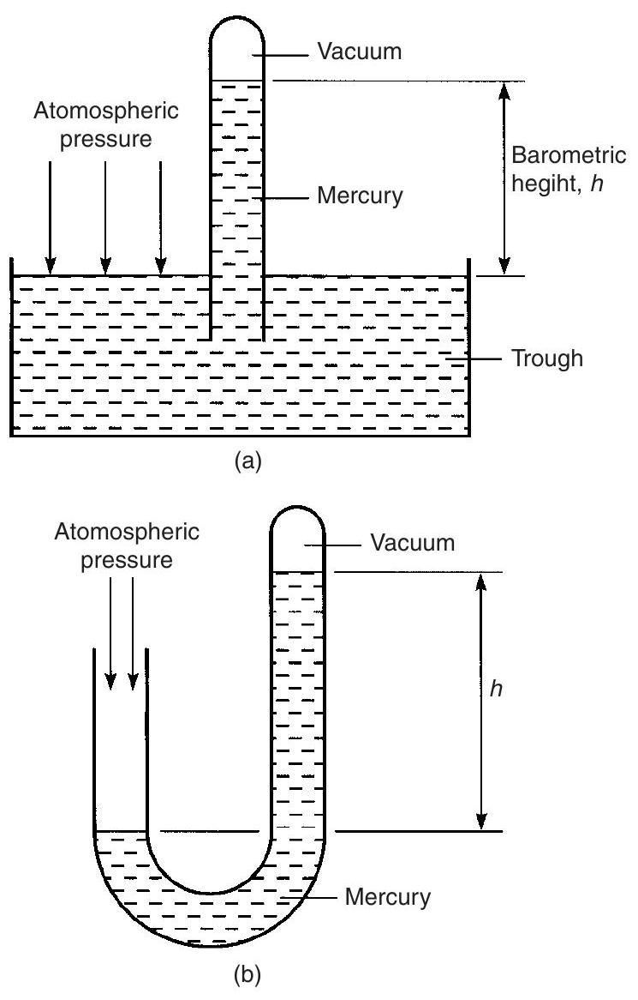Figure 21.3
high exerts a pressure equal to the standard value of atmospheric pressure. There are thus several ways in which atmospheric pressure can be expressed: Standard atmospheric pressure $$ \begin{aligned} &=101325\mathrm{~Pa} \text {or} 101.325\mathrm{~kPa} \\ &=101325\mathrm{~N}/ \mathrm{m}^{2} \text {or} 101.325\mathrm{~kN}/ \mathrm{m}^{2} \\ &=1.01325\text {bars} \text {or} 1013.25\mathrm{~mbars} \\ &=760\mathrm{~mm} \text {of mercury}\end{aligned} $$ Another arrangement of a typical barometer is shown in Figure 21.3(b) where a U-tube is used instead of an inverted tube and trough, the principle being similar.
If, instead of mercury, water was used as the liquid in a barometer, then the barometric height $h$ at standard atmospheric pressure would be 13.6 times more than for mercury, i.e. about 10.4 m high, which is not very practicable. This is because the relative density of mercury is 13.6.
Types of barometer
The Fortin barometer is an example of a mercury barometer that enables barometric heights to be measured to a high degree of accuracy (in the order of one-tenth of a millimetre or less). Its construction is merely a more sophisticated arrangement of the inverted tube and trough shown in Figure 21.3(a), with the addition of a vernier scale to measure the barometric height with great accuracy. A disadvantage of this type of barometer is that it is not portable.
A Fortin barometer is shown in Figure 21.4. Mercury is contained in a leather bag at the base of the mercury reservoir, and height, $H$, of the mercury in the reservoir can be adjusted using the screw at the base of the barometer to depress or release the leather bag. To measure the atmospheric pressure the screw is adjusted until the pointer at $H$ is just touching the surface of the mercury and the height of the mercury column is then read using the main and vernier scales. The measurement of atmospheric pressure using a Fortin barometer is achieved much more accurately than by using a simple barometer.
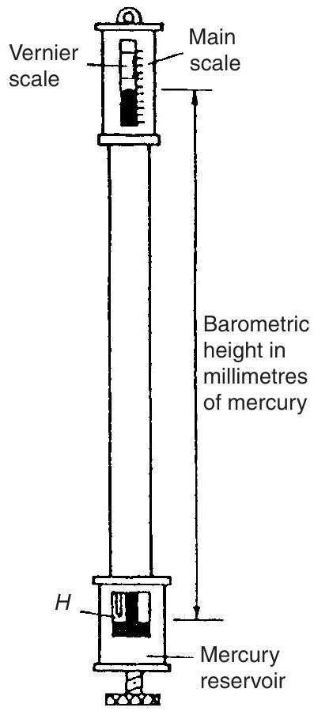Figure 21.4
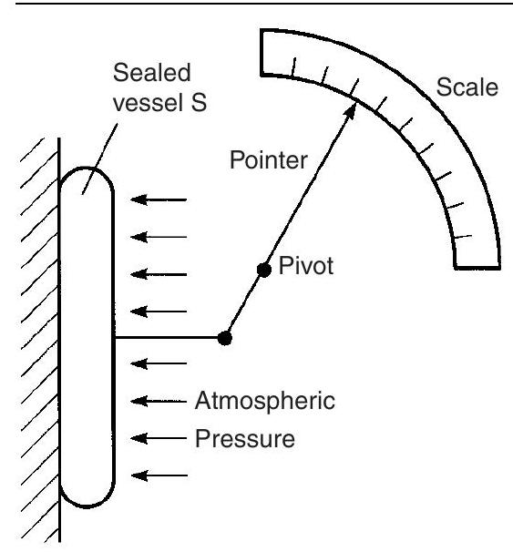Figure 21.5
A portable type often used is the aneroid barometer. Such a barometer consists basically of a circular, hollow, sealed vessel, $S$, usually made from thin flexible metal. The air pressure in the vessel is reduced to nearly zero before sealing, so that a change in atmospheric pressure will cause the shape of the vessel to expand or contract. These small changes can be magnified by means of a lever and be made to move a pointer over a calibrated scale. Figure 21.5 shows a typical arrangement of an aneroid barometer. The scale is usually circular and calibrated in millimetres of mercury. These instruments require frequent calibration.
21.7 Absolute and gauge pressure
A barometer measures the true or absolute pressure of the atmosphere. The term absolute pressure means the pressure above that of an absolute vacuum (which is zero pressure), as stated earlier. In Figure 21.6 a pressure scale is shown with the line $AB$ representing absolute zero pressure (i.e. a vacuum) and line $CD$ representing atmospheric pressure. With most practical pressure-measuring instruments the part of the instrument that is subjected to the pressure being measured is also subjected to atmospheric pressure. Thus practical instruments actually determine the difference between the pressure being measured and atmospheric pressure. The pressure that the instrument is measuring is then termed the gauge pressure. In Figure 21.6, the line $EF$ represents an absolute pressure which has a value greater than atmospheric pressure, i.e. the 'gauge' pressure is positive.
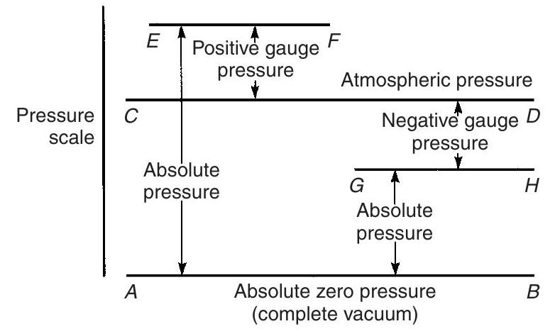Figure 21.6
Thus, absolute pressure
$=$ gauge pressure $+$ atmospheric pressure. Hence a gauge pressure of, say, 60 kPa recorded on an indicating instrument when the atmospheric pressure is 101 kPa is equivalent to an absolute pressure of $60\mathrm{~kPa}+101\mathrm{~kPa}$, or 161 kPa .
Pressure-measuring indicating instruments are referred to generally as pressure gauges (which acts as a reminder that they measure 'gauge' pressure).
It is possible, of course, for the pressure indicated on a pressure gauge to be below atmospheric pressure, i.e. the gauge pressure is negative. Such a gauge pressure is often referred to as a vacuum, even though it does not necessarily represent a complete vacuum at absolute zero pressure. Such a pressure is shown by the line $GH$ in Figure 21.6. An indicating instrument used for measuring such pressures is called a vacuum gauge.
A vacuum gauge indication of, say, 0.4 bar means that the pressure is 0.4 bar less than atmospheric pressure. If atmospheric pressure is 1 bar, then the absolute pressure is $1-0.4$ or 0.6 bar.
21.8 The manometer
A manometer is a device for measuring or comparing fluid pressures, and is the simplest method of indicating such pressures.
U-tube manometer
A U-tube manometer consists of a glass tube bent into a $U$ shape and containing a liquid such as mercury. A U-tube manometer is shown in Figure 21.7(a). If $\operatorname{limb} A$ is connected to a container of gas whose pressure is above atmospheric, then the pressure of the gas will cause the levels of mercury
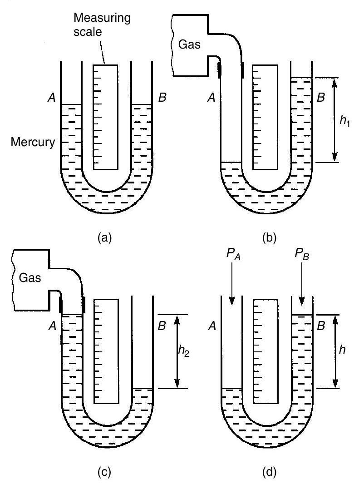Figure 21.7
to move as shown in Figure 21.7(b), such that the difference in height is $h_{1}$. The measuring scale can be calibrated to give the gauge pressure of the gas as $h_{1}\mathrm{~mm}$ of mercury.
If limb $A$ is connected to a container of gas whose pressure is below atmospheric then the levels of mercury will move as shown in Figure 21.7(c), such that their pressure difference is $h_{2}\mathrm{~mm}$ of mercury.
It is also possible merely to compare two pressures, say, $P_{A}$ and $P_{B}$, using a U-tube manometer. Figure 21.7(d) shows such an arrangement with ($P_{B}-P_{A}$) equivalent to $h\mathrm{~mm}$ of mercury. One application of this differential pressure-measuring device is in determining the velocity of fluid flow in pipes (see Chapter 22).
For the measurement of lower pressures, water or paraffin may be used instead of mercury in the U-tube to give larger values of $h$ and thus greater sensitivity.
Inclined manometers
For the measurement of very low pressures, greater sensitivity is achieved by using an inclined manometer, a typical arrangement of which is shown in Figure 21.8. With the inclined manometer the liquid used is water and the scale attached to the inclined tube is calibrated in terms of the vertical height $h$. Thus when a vessel containing gas under pressure is connected to the reservoir, movement of the liquid levels of the manometer occurs. Since small-bore tubing is used the movement of the liquid in the reservoir is very small compared with the movement in the inclined tube and is thus neglected. Hence the scale on the manometer is usually used in the range 0.2 mbar to 2 mbar .
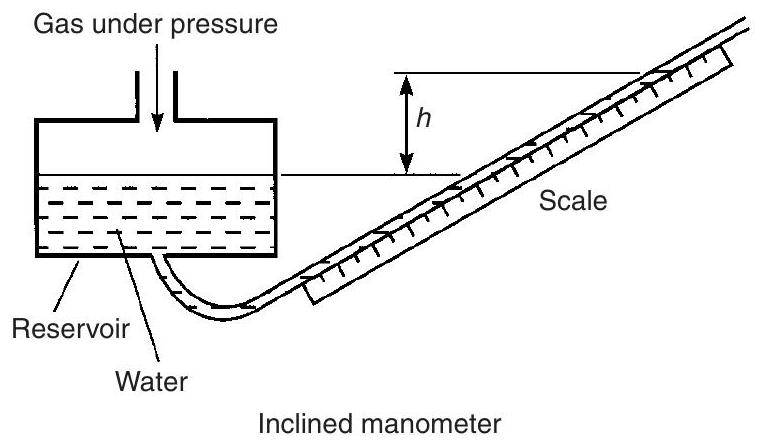Figure 21.8
The pressure of a gas that a manometer is capable of measuring is naturally limited by the length of tube used. Most manometer tubes are less than 2 m in length and this restricts measurement to a maximum pressure of about 2.5 bar (or 250 kPa ) when mercury is used.
21.9 The Bourdon pressure gauge
Pressures many times greater than atmospheric can be measured by the Bourdon pressure gauge, which is the most extensively used of all pressureindicating instruments. It is a robust instrument. Its main component is a piece of metal tube (called the Bourdon tube), usually made of phosphor bronze or alloy steel, of oval or elliptical cross-section, sealed at one end and bent into an arc. In some forms the tube is bent into a spiral for greater sensitivity. A typical arrangement is shown in Figure 21.9(a). One end, $E$, of the Bourdon tube is fixed and the fluid whose pressure is to be measured is connected to this end. The pressure acts at right angles to the metal tube wall as shown in the cross-section of the tube in Figure 21.9(b). Because of its elliptical shape it is clear that the sum of the pressure components, i.e. the total force acting on the sides $A$ and $C$, exceeds the sum of the pressure components acting on ends $B$ and $D$. The result is that sides $A$ and $C$ tend to move outwards and $B$ and $D$ inwards tending to form a circular cross-section. As the pressure in the tube is increased the tube tends to uncurl, or if the pressure is reduced the tube curls up further. The movement of the free end of the tube is, for practical purposes, proportional to the pressure applied to the tube, this pressure, of course, being the gauge pressure (i.e. the difference between atmospheric pressure acting on the outside of the tube and the applied pressure acting on the inside of the tube). By using a link, a pivot and a toothed segment as shown in Figure 21.9(a), the movement can be converted into the rotation of a pointer over a graduated calibrated scale.
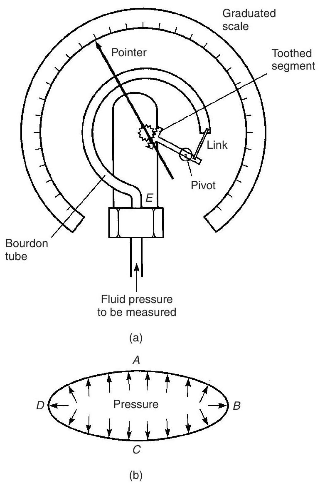Figure 21.9
The Bourdon tube pressure gauge is capable of measuring high pressures up to $10^{4}$ bar (i.e. 7600 m of mercury) with the addition of special safety features.
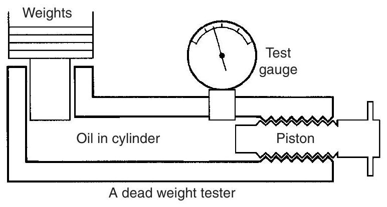Figure 21.10
A pressure gauge must be calibrated, and this is done either by a manometer, for low pressures, or by a piece of equipment called a 'dead weight tester'. This tester consists of a piston operating in an oil-filled cylinder of known bore, and carrying accurately known weights as shown in Figure 21.10. The gauge under test is attached to the tester and a screwed piston or ram applies the required pressure, until the weights are just lifted. While the gauge is being read, the weights are turned to reduce friction effects.
21.10 Vacuum gauges
Vacuum gauges are instruments for giving a visual indication, by means of a pointer, of the amount by which the pressure of a fluid applied to the gauge is less than the pressure of the surrounding atmosphere. Two examples of vacuum gauges are the McLeod gauge and the Pirani gauge.
McLeod gauge
The McLeod gauge is normally regarded as a standard and is used to calibrate other forms of vacuum gauges. The basic principle of this gauge is that it takes a known volume of gas at a pressure so low that it cannot be measured, then compresses the gas in a known ratio until the pressure becomes large enough to be measured by an ordinary manometer. This device is used to measure low pressures, often in the range $10^{-6}$ to 1.0 mm of mercury. A disadvantage of the McLeod gauge is that it does not give a continuous reading of pressure and is not suitable for registering rapid variations in pressure.
Pirani gauge
The Pirani gauge measures the resistance and thus the temperature of a wire through which current is flowing. The thermal conductivity decreases with the pressure in the range $10^{-1}$ to $10^{-4}\mathrm{~mm}$ of mercury so that the increase in resistance can be used to measure pressure in this region. The Pirani gauge is calibrated by comparison with a McLeod gauge.
21.11 Hydrostatic pressure on submerged surfaces
From Section 21.2, it can be seen that hydrostatic pressure increases with depth according to the formula: $$ p=\rho gh $$
Problem 10. The deepest part of the oceans is the Mariana's trench, where its depth is approximately 11.52 km ( 7.16 miles). What is the gauge pressure at this depth, assuming that $\rho=1020\mathrm{~kg}/ \mathrm{m}^{3}$ and $g=9.81\mathrm{~m}/ \mathrm{s}^{2}$
Gauge pressure, $$ \begin{aligned} p &=\rho gh \\ &=1020\frac{\mathrm{~kg}}{\mathrm{~m}^{3}} \times 9.81\frac{\mathrm{~m}}{\mathrm{~s}^{2}} \times 11.52 \times 10^{3}\mathrm{~m} \\ &=11.527 \times 10^{7}\mathrm{~N}/ \mathrm{m}^{2} \times \frac{1\mathrm{~bar}}{10^{5}\mathrm{~N}/ \mathrm{m}^{2}}\end{aligned} $$ i.e. pressure, $$ p=\mathbf{1152.7}\mathbf{~bar} $$ Note that from the above calculation, it can be seen that a gauge pressure of 1 bar is approximately equivalent to a depth of 10 m .
Problem 11. Determine an expression for the thrust acting on a submerged plane surface, which is inclined to the horizontal by an angle $\theta$, as shown in Figure 21.11.
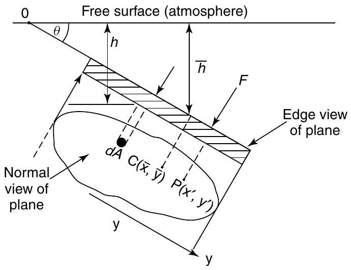Figure 21.11
but $\quad h=y \sin \theta$ Hence, $\quad \delta F=\rho gy \sin \theta dA$ Total thrust on plane surface $$ =F=\int dF=\int \rho gy \sin \theta dA $$ or $\quad F=\rho \mathrm{g}\sin \theta \int y dA$ However, $\int yd A=A\bar{h}$ where $A=$ area of the surface, and $\bar{h}=$ distance of the centroid of the plane from the free surface.
Problem 12. Determine an expression for the position of the centre of pressure of the plane surface $P(x', y')$ of Figure 21.11; this is also the position of the centre of thrust.
Taking moments about $O$ gives: $$ \begin{aligned} Fy' &=\int \rho gy \sin \theta dA \times y \\ \text {However,} \quad F &=\rho g \sin \theta \int yd A\end{aligned} $$ Hence, $$ \begin{aligned} y' &=\frac{\int \rho gy^{2}\sin \theta dA}{\rho g \sin \theta \int yd A} \\ &=\frac{\rho g \sin \theta \int y^{2}dA}{\rho g \sin \theta \int yd A}=\frac{(Ak^{2})_{Ox}}{A\bar{y}}\end{aligned} $$ where $(Ak^{2})_{Ox}=$ the second moment of area about $Ox$ $k=$ the radius of gyration from $O$.
Now try the following exercise
Exercise 110 Further problems on hydrostatic pressure on submerged surfaces
(Take $g=9.81\mathrm{~m}/ \mathrm{s}^{2}$)
- Determine the gauge pressure acting on the surface of a submarine that dives to a depth of 500 m . Take water density as $1020\mathrm{~kg}/ \mathrm{m}^{3}$. [50.03 bar]
- Solve Problem 1, when the submarine dives to a depth of 780 m . [ 78.05 bar ]
- If the gauge pressure measured on the surface of the submarine of Problem 1 were 92 bar, at what depth has the submarine dived to? [ 919.4 m ]
- A tank has a flat rectangular end, which is of size 4 m depth by 3 m width. If the tank filled with water to its brim and the flat end is vertical, determine the thrust on this end and the position of its centre of pressure. Take water density as $1000\mathrm{~kg}/ \mathrm{m}^{3}$. [ $0.235\mathrm{~MN}; 2.668\mathrm{~m}$ ]
- If another vertical flat rectangular end of the tank of Problem 4 is of size 6 m depth by 4 m width, determine the thrust on this end and position of the centre of pressure. The depth of water at this end may be assumed to be $6\mathrm{~m}$. [0.706 MN; 4 m]
- A tank has a flat rectangular end, which is inclined to the horizontal surface, so that $\theta=30^{\circ}$, where $\theta$ is as defined in Figure 21.11, page 240. If this end is of size 6 m height and 4 m width, determine the thrust on this end and the position of the centre of pressure from the top. The tank may be assumed to be just full. [0.353 MN; 2 m ]
21.12 Hydrostatic thrust on curved surfaces
As hydrostatic pressure acts perpendicularly to a surface, the integration of $\delta F$ over the surface can be complicated. One method of determining the thrust on a curved surface is to project its area on flat vertical and horizontal surfaces, as shown by $AB$ and $DE$, respectively, in Figure 21.12.
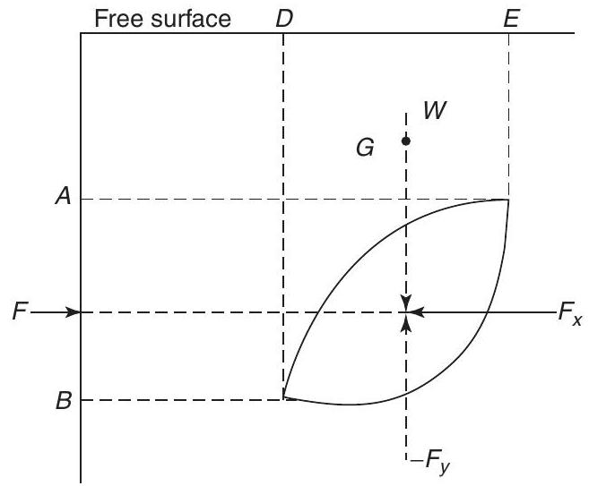Figure 21.12
From equilibrium considerations, $F=F_{x}$ and $W=F_{y}$ and these thrusts must act through the centre of pressures of the respective vertical and horizontal planes, where $$ \begin{aligned} F_{x} &= \text {horizontal force exerted on curved surface} \\ &= \text {thrust on vertical projection of curved surface} \\ F_{y} &= \text {vertical force exerted on curved surface} \\ &= \text {weight of fluid above curved surface}\end{aligned} $$
The resultant thrust $R=\sqrt{F_{x}^{2}+F_{y}^{2}}$ and acts at an angle $\alpha$ to the horizontal, where $\tan \alpha=\frac{F_{y}}{F_{x}}$.
21.13 Buoyancy
The upward force exerted by the fluid on a body that is wholly or partially immersed in it is called the buoyancy of the body.
21.14 The stability of floating bodies
For most ships and boats the centre of buoyancy ($B$) of the vessel is usually below the vessels' centre of gravity ($G$), as shown in Figure 21.13(a). When this vessel is subjected to a small angle of keel ($\theta$), as shown in Figure 21.13(b), the centre of buoyancy moves to the position $B'$, where
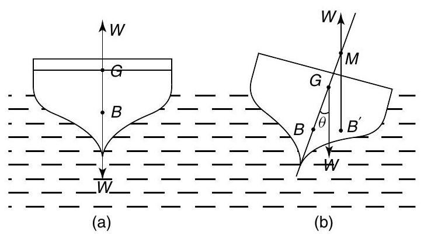Figure 21.13
The metacentric height $GM$ can be found by a simple inclining experiment, where a weight $P$ is moved transversely a distance $x$, as shown in Figure 21.14.
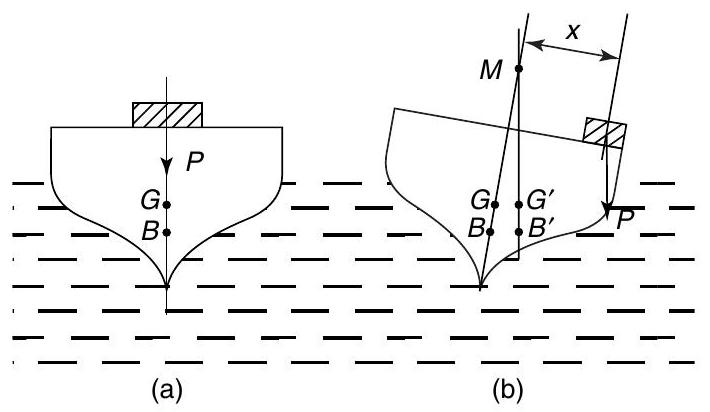Figure 21.14
From rotational equilibrium considerations, $$ W(GM)\tan \theta=Px $$
where $W=$ the weight of the vessel, and $$ \cot \theta=\frac{1}{\tan \theta} $$
Problem 13. A naval architect has carried out hydrostatic calculations on a yacht, where he has found the following: $M=$ mass of yacht $=100\text { tonnes}$, $KB=$ vertical distance of the centre of buoyancy $(B)$ above the keel $(K)$ $=1.2\mathrm{~m}$ (see Figure 21.15), $BM=$ distance of the metacentre $(M)$ above the centre of buoyancy $=2.4\mathrm{~m}$.
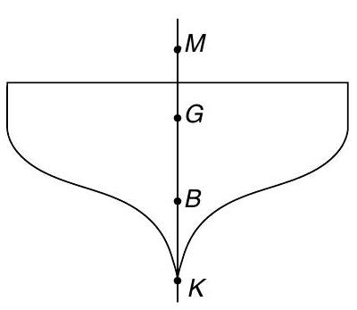Figure 21.15
He then carries out an inclining experiment, where he moves a mass of 50 kg through a transverse distance of 10 m across the yacht's deck. In doing this, he finds that the resulting angle of keel $\theta=1^{\circ}$. What is the metacentric height (GM) and the position of the centre of gravity of the yacht above the keel, namely $KG$? Assume $g=9.81\mathrm{~m}/ \mathrm{s}^{2}$.
$$ \begin{aligned} P &=50\mathrm{~kg} \times 9.81=490.5\mathrm{~N} \\ W &=100\text {tonnes} \times 1000\frac{\mathrm{~kg}}{\text {tonne}} \times 9.81\frac{\mathrm{~m}}{\mathrm{~s}^{2}} \\ &=981\mathrm{~kN} \\ x &=10\mathrm{~m} \\ \theta &=1^{\circ} \text {from which,} \tan \theta=0.017455\text {and} \\ \cot \theta &=\frac{1}{\tan \theta}=57.29\end{aligned} $$ From equation (21.1), $$ \begin{aligned} GM &=\frac{Px}{W}\cot \theta \\ &=\frac{490.5\mathrm{~N} \times 10\mathrm{~m} \times 57.29}{981 \times 10^{3}\mathrm{~N}}\end{aligned} $$ i.e. metacentric height, $\boldsymbol{G}\boldsymbol{M}\boldsymbol{=}\mathbf{0.286}\mathbf{~ m}$ Now $$ \begin{aligned} KM &=KB+BM \\ &=1.2\mathrm{~m}+2.4\mathrm{~m}=3.6\mathrm{~m}\end{aligned} $$ $$ KG=KM-GM $$ $$=3.6-0.286=3.314\mathrm{~m}$$ i.e. centre of gravity above the keel, $\boldsymbol{K}\boldsymbol{G}\mathbf{=3.314}\mathbf{~ m}$, (where ' $K$' is a point on the keel).
Problem 14. A barge of length 30 m and width 8 m floats on an even keel at a depth of 3 m . What is the value of its buoyancy? Take density of water, $\rho$, as $1000\mathrm{~kg}/ \mathrm{m}^{3}$ and $g$ as $9.81\mathrm{~m}/ \mathrm{s}^{2}$.
The displaced volume of the barge, $$ V=30\mathrm{~m} \times 8\mathrm{~m} \times 3\mathrm{~m}=720\mathrm{~m}^{3}. $$ From Section 21.4, $$ \begin{aligned} \text {buoyancy} &=V\rho g \\ &=720\mathrm{~m}^{3} \times 1000\frac{\mathrm{~kg}}{\mathrm{~m}^{3}} \times 9.81\frac{\mathrm{~m}}{\mathrm{~s}^{2}} \\ &=7.063\mathrm{~MN}\end{aligned} $$
Problem 15. If the vertical centre of gravity of the barge in Problem 14 is 2 m above the keel, (i.e. $KG=2\mathrm{~m}$), what is the metacentric height of the barge?
Now $KB=$ the distance of the centre of buoyancy of the barge from the keel $=\frac{3\mathrm{~m}}{2}$ i.e. $KB=1.5\mathrm{~m}$. From page 242, $BM=\frac{I}{V}$ and for a rectangle, $$ \begin{aligned} I &=\frac{Lb^{3}}{12}\text {from Table} 7.1, \text {page} 91, \text {where} \\ L &=\text {length of the waterplane}=30\mathrm{~m}, \text {and} \\ b &=\text {width of the waterplane}=8\mathrm{~m}.\end{aligned} $$ Hence, moment of inertia, $$ I=\frac{30 \times 8^{3}}{12}=1280\mathrm{~m}^{4} $$ From Problem 14, volume, $$ V=720\mathrm{~m}^{3} $$ hence, $$ BM=\frac{I}{V}=\frac{1280}{720}=1.778\mathrm{~m} $$ Now, $KM=KB+BM=1.5\mathrm{~m}+1.778\mathrm{~m}=3.278\mathrm{~m}$ i.e. the centre of gravity above the keel, $KM=3.278\mathrm{~m}$. Since $KG=2\mathrm{~m}$ (given), then $GM=KM-KG=3.278-2=1.278\mathrm{~m}$, i.e. the metacentric height of the barge, $\boldsymbol{G}\boldsymbol{M}=\mathbf{1.278}\mathbf{~ m}$.
Now try the following exercise
Exercise 111 Further problems on hydrostatics
In the following problems, where necessary, take $g=9.81\mathrm{~m}/ \mathrm{s}^{2}$ and density of water $\rho=1020\mathrm{~kg}/ \mathrm{m}^{3}$.
- A ship is of mass 10000 kg . If the ship floats in the water, what is the value of its buoyancy? [98.1 kN]
- A submarine may be assumed to be in the form of a circular cylinder of 10 m external diameter and of length 100 m . If the submarine floats just below the surface of the water, what is the value of its buoyancy? [78.59 MN]
- A barge of length 20 m and of width 5 m floats on an even keel at a depth of 2 m . What is the value of its buoyancy? [2 MN]
- An inclining experiment is carried out on the barge of Problem 3 where a mass of 20 kg is moved transversely across the deck by a distance of 2.2 m . The resulting angle of keel is $0.8^{\circ}$. Determine the metacentric height, GM. [ 0.155 m ]
- Determine the value of the radius of curvature of the centre of buoyancy, namely, $BM$, for the barge of Problems 3 and 4, and hence the position of the centre of gravity above the keel, $KG$. [ 2.026 m ]
- If the submarine of Problem 2 floats so that its top is 2 m above the water, determine the radius of curvature of the centre of buoyancy, $BM$. [ 0.633 m ]
Exercise 112 Short answer questions on hydrostatics
- Define pressure.
- State the unit of pressure.
- Define a fluid.
- State the four basic factors governing the pressure in fluids.
- Write down a formula for determining the pressure at any point in a fluid in symbols, defining each of the symbols and giving their units.
- What is meant by atmospheric pressure?
- State the approximate value of atmospheric pressure.
- State what is meant by gauge pressure.
- State what is meant by absolute pressure.
- State the relationship between absolute, gauge and atmospheric pressures.
- State Archimedes' principle.
- Name four pressure measuring devices.
- Standard atmospheric pressure is 101325 Pa . State this pressure in millibars.
- Briefly describe how a barometer operates.
- State the advantage of a Fortin barometer over a simple barometer.
- What is the main disadvantage of a Fortin barometer?
- Briefly describe an aneroid barometer.
- What is a vacuum gauge?
- Briefly describe the principle of operation of a U-tube manometer.
- When would an inclined manometer be used in preference to a U-tube manometer?
- Briefly describe the principle of operation of a Bourdon pressure gauge.
- What is a 'dead weight tester'?
- What is a Pirani gauge?
- What is a McLeod gauge used for?
- What is buoyancy?
- What does the abbreviation $BM$ mean?
- What does the abbreviation $GM$ mean?
- Define $BM$ in terms of the second moment of area $I$ of the water plane, and the displaced volume $V$ of a vessel.
- What is the primary purpose of a ship's inclining experiment?
Exercise 113 Multi-choice questions on hydrostatics (Answers on page 285)
- A force of 50 N acts uniformly over and at right angles to a surface. When the area of the surface is $5\mathrm{~m}^{2}$, the pressure on the area is: (a) 250 Pa (b) 10 Pa (c) 45 Pa (d) 55 Pa
- Which of the following statements is false? The pressure at a given depth in a fluid (a) is equal in all directions (b) is independent of the shape of the container (c) acts at right angles to the surface containing the fluid (d) depends on the area of the surface
- A container holds water of density $1000\mathrm{~kg}/ \mathrm{m}^{3}$. Taking the gravitational acceleration as $10\mathrm{~m}/ \mathrm{s}^{2}$, the pressure at a depth of 100 mm is: (a) 1 kPa (b) 1 MPa (c) 100 Pa (d) 1 Pa
- If the water in question 3 is now replaced by a fluid having a density of $2000\mathrm{~kg}/ \mathrm{m}^{3}$, the pressure at a depth of 100 mm is: (a) 2 kPa (b) 500 kPa (c) 200 Pa (d) 0.5 Pa
- The gauge pressure of fluid in a pipe is 70 kPa and the atmospheric pressure is 100 kPa . The absolute pressure of the fluid in the pipe is: (a) 7 MPa (b) 30 kPa (c) 170 kPa (d) $10 / 7\mathrm{~kPa}$
- A U-tube manometer contains mercury of density $13600\mathrm{~kg}/ \mathrm{m}^{3}$. When the difference in the height of the mercury levels is 100 mm and taking the gravitational acceleration as $10\mathrm{~m}/ \mathrm{s}^{2}$, the gauge pressure is: (a) 13.6 Pa (b) 13.6 MPa (c) 13710 Pa (d) 13.6 kPa
- The mercury in the U-tube of question 6 is to be replaced by water of density $1000\mathrm{~kg}/ \mathrm{m}^{3}$. The height of the tube to contain the water for the same gauge pressure is: (a) $(1 / 13.6)$ of the original height (b) 13.6 times the original height (c) 13.6 m more than the original height (d) 13.6 m less than the original height
- Which of the following devices does not measure pressure? (a) barometer (b) McLeod gauge (c) thermocouple (d) manometer
- A pressure of 10 kPa is equivalent to: (a) 10 millibars (b) 1 bar (c) 0.1 bar (d) 0.1 millibars
- A pressure of 1000 mbars is equivalent to: (a) $0.1\mathrm{~kN}/ \mathrm{m}^{2}$ (b) 10 kPa (c) 1000 Pa (d) $100\mathrm{~kN}/ \mathrm{m}^{2}$
- Which of the following statements is false? (a) Barometers may be used for the measurement of altitude. (b) Standard atmospheric pressure is the pressure due to the mass of the air above the ground. (c) The maximum pressure that a mercury manometer, using a 1 m length of glass tubing, is capable of measuring is in the order of 130 kPa . (d) An inclined manometer is designed to measure higher values of pressure than the U-tube manometer.
In questions 12 and 13 assume that atmospheric pressure is 1 bar.
- A Bourdon pressure gauge indicates a pressure of 3 bars. The absolute pressure of the system being measured is: (a) 1 bar (b) 2 bars (c) 3 bars (d) 4 bars
- In question 12, the gauge pressure is: (a) 1 bar (b) 2 bars (c) 3 bars (d) 4 bars
In questions 14 to 18 select the most suitable pressure-indicating device from the following list: (a) Mercury filled U-tube manometer (b) Bourdon gauge (c) McLeod gauge (d) aneroid barometer (e) Pirani gauge (f) Fortin barometer (g) water-filled inclined barometer
- A robust device to measure high pressures in the range $0-30\mathrm{~MPa}$.
- Calibration of a Pirani gauge.
- Measurement of gas pressures comparable with atmospheric pressure.
- To measure pressures of the order of 1 MPa .
- Measurement of atmospheric pressure to a high degree of accuracy.
- Figure 21.7(b), on page 238, shows a U-tube manometer connected to a gas under pressure. If atmospheric pressure is 76 cm of mercury and $h_{1}$ is measured in centimetres then the gauge pressure (in cm of mercury) of the gas is: (a) $h_{1}$ (b) $h_{1}+76$ (c) $h_{1}-76$ (d) $76-h_{1}$
- In question 19 the absolute pressure of the gas (in cm of mercury) is: (a) $h_{1}$ (b) $h_{1}+76$ (c) $h_{1}-76$ (d) $76-h_{1}$
- Which of the following statements is true? (a) Atmospheric pressure of 101.325 $\mathrm{kN}/ \mathrm{m}^{2}$ is equivalent to 101.325 millibars. (b) An aneroid barometer is used as a standard for calibration purposes. (c) In engineering, 'pressure' is the force per unit area exerted by fluids. (d) Water is normally used in a barometer to measure atmospheric pressure.
- Which of the following statements is true for a ship floating in equilibrium? (a) The weight is larger than the buoyancy. (b) The weight is smaller than the buoyancy. (c) The weight is equal to the buoyancy. (d) The weight is independent of the buoyancy.
- For a ship to be initially stable, the metacentric height must be: (a) positive (b) negative (c) zero (d) equal to the buoyancy
- For a ship to be stable, it is helpful if $KG$ is: (a) negative (b) large (c) small (d) equal to $KM$